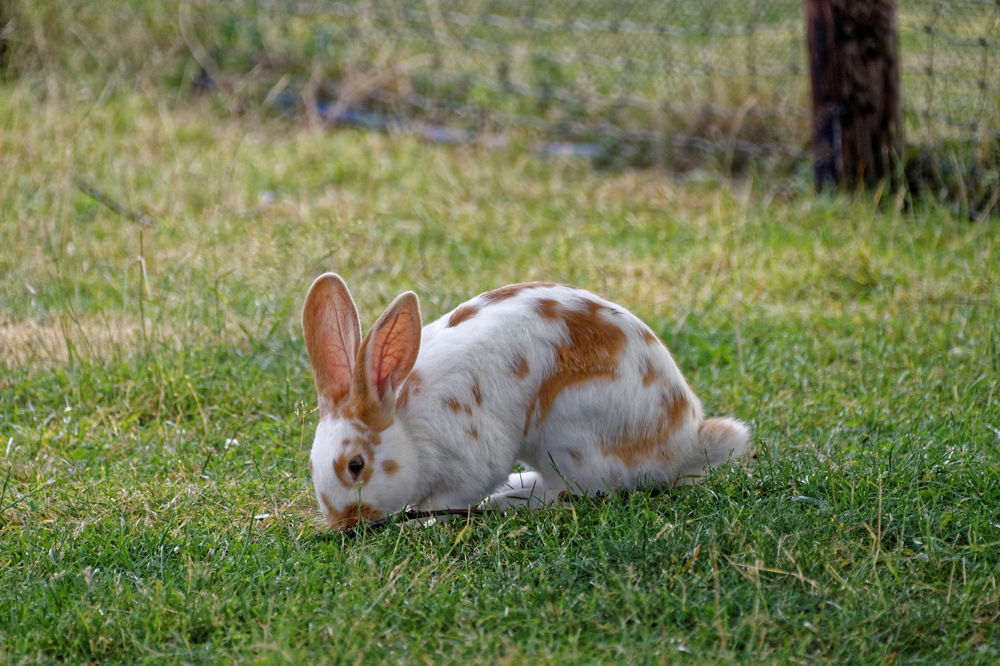
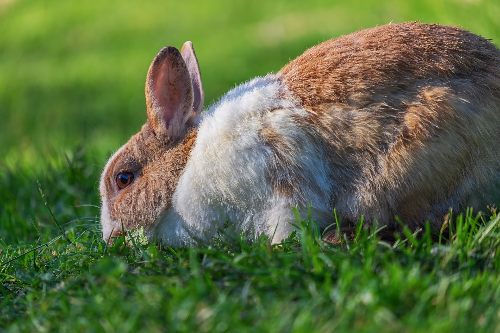
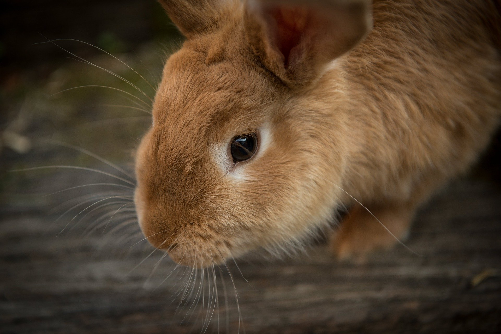
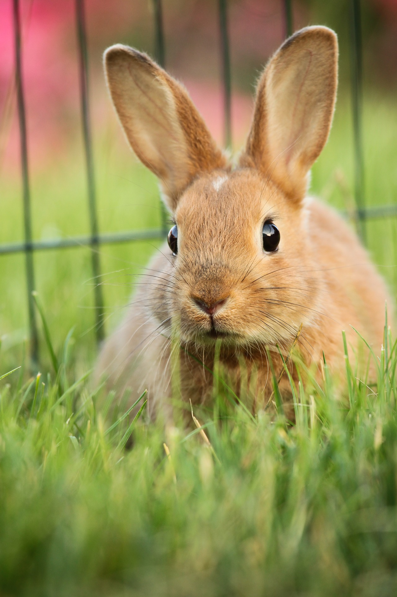

O coelho Nova Zelândia, apesar do nome, é originário dos Estados Unidos e hoje apresenta ampla distribuição mundial, sendo a raça pura mais criada no Brasil. Devido à sua boa proporção corporal, bom desempenho na produção e as fêmeas serem excelentes reprodutoras, é uma raça criada sobretudo para carne e pele, embora tenha sido frequentemente utilizada como modelo animal para pesquisas e também como animal de estimação (pet). Os machos apresentam um perfil mais arredondado e os membros mais fortes, já as fêmeas têm um perfil mais afilado e apresentam papada na porção ventral do pescoço (prega de pele) presente, geralmente, após atingirem a maturidade sexual. Suas orelhas são eretas, pequenas em relação ao corpo e com formato em “v”, sendo discretamente arredondadas nas pontas.
É importante salientar que o manejo correto é fundamental para prevenir uma série de doenças e fornecer uma boa qualidade de vida. Portanto, ao adquirir um coelho recomenda-se, além de conhecimento prévio a respeito da espécie e da raça, a realização de uma consulta inicial com um(a) médico(a) veterinário(a) especializado(a) em pets não convencionais a fim de obter informações sobre como cuidar corretamente desse pet.
  